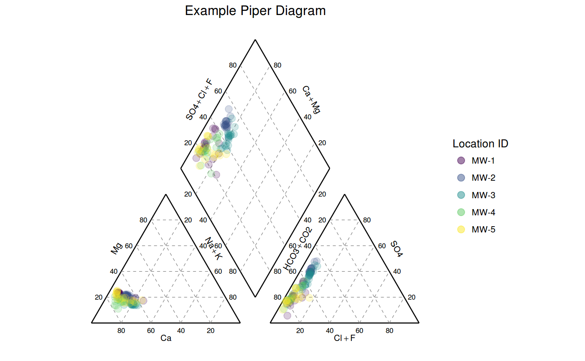
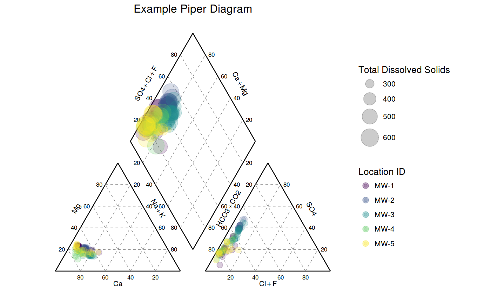
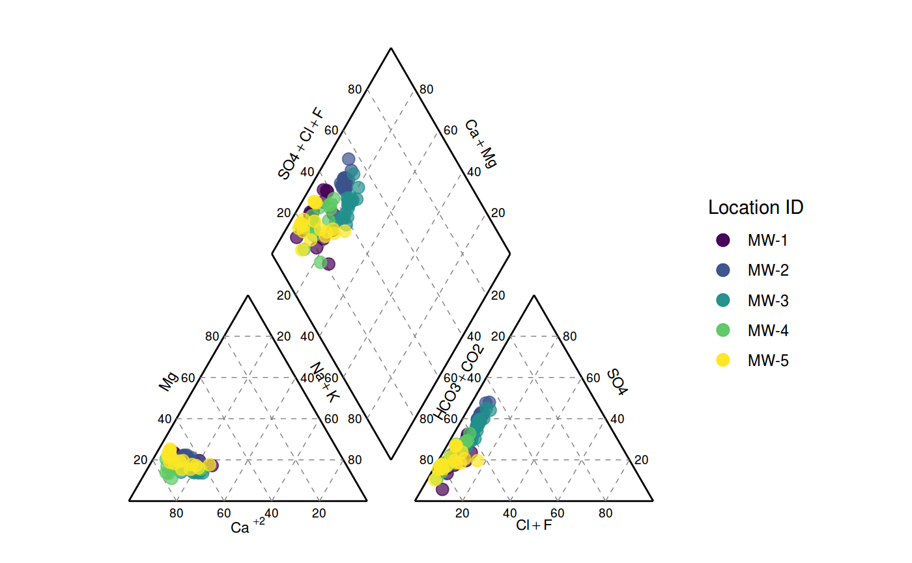

labels accept plotmath expressions
piper_plot(df, location_id = "location_id", sample_date = "sample_date", x_cation = "Calcium, dissolved", x_cation_label = "Ca", y_cation = "Magnesium, dissolved", y_cation_label = "Mg", z_cation = c("Sodium, dissolved", "Potassium, dissolved"), z_cation_label = "Na + K", x_anion = c("Chloride, total", "Fluoride, total"), x_anion_label = "Cl + F", y_anion = "Alkalinity, total (lab)", y_anion_label = "HCO3 + CO2", z_anion = "Sulfate, total", z_anion_label = "SO4", x_z_anion_label = "SO4 + Cl + F", x_y_cation_label = "Ca + Mg", total_dissolved_solids = NULL, transparency = 0.2, pnt_size = 3, label_size = 3, title = NULL)
| df | data frame of water quality data in tidy format |
|---|---|
| location_id | column for sample location |
| sample_date | column for sample date |
| x_cation | default is Calcium, dissolved |
| x_cation_label | label for x cation |
| y_cation | default is Magnesium, dissolved |
| y_cation_label | label for y cation |
| z_cation | default is Sodium, dissolved + Potassium, dissolved |
| z_cation_label | label for z cation |
| x_anion | default is Chloride, total + Fluoride, total |
| x_anion_label | label for x anion |
| y_anion | default is Alkalinity, total (lab) |
| y_anion_label | label for y anion |
| z_anion | default is Sulfate, total |
| z_anion_label | label for z anion |
| x_y_cation_label | label for the upper right diamond |
| total_dissolved_solids | Scale plot by Total Dissolved Solids, default = FALSE |
| transparency | the setting for transparency value for points. Default is 0.2 |
| pnt_size | the size of the points. Default is 3 |
| label_size | size of font for labels |
| title | Title for plot, default = NULL |
| z_x_anion_label | label for the upper left diamond |
data(gw_data) wells <- c("MW-1", "MW-2", "MW-3", "MW-4", "MW-5") gw_data %>% filter(location_id %in% wells) %>% piper_plot(., title = "Example Piper Diagram")#> Warning: Removed 2 rows containing missing values (geom_point).#> Warning: Removed 2 rows containing missing values (geom_point).#> Warning: Removed 2 rows containing missing values (geom_point).# scaled by Total Dissolved Solids gw_data %>% filter(location_id %in% wells) %>% piper_plot(., total_dissolved_solids = "Total Dissolved Solids", title = "Example Piper Diagram")#> Warning: Removed 2 rows containing missing values (geom_point).#> Warning: Removed 2 rows containing missing values (geom_point).#> Warning: Removed 2 rows containing missing values (geom_point).# use plotmath expressions for labels gw_data %>% filter(location_id %in% wells) %>% piper_plot(., x_cation_label = "Ca~phantom()^+2")#> Warning: Removed 2 rows containing missing values (geom_point).#> Warning: Removed 2 rows containing missing values (geom_point).#> Warning: Removed 2 rows containing missing values (geom_point).